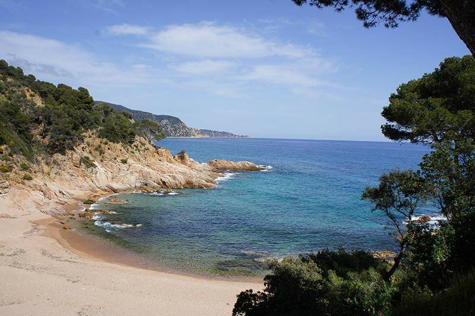

About me#
I’m a physicist/engineer converted into a computational statistician. I love statistical data analysis, programming and data visualization. I am a core contributor of both ArviZ a project for exploratory analysis of Bayesian models and PyMC a Python library for probabilistic programming. In addition to probabilistic modelling, I also enjoy teaching and technical writing.
I think that the culture in scientific research needs deep changes towards a more collaborative, open and diverse model. I am interested in open science, reproducible research and science communication. I want to pursue a career in probabilistic modelling and statistical research with special emphasis on openness and reproducibility.
In my spare time, I like playing board games and going to the beach to do water activities. I have been sailing and snorkeling regularly since I was little and more recently I added kayaking to the mix too! I generally spend the summer at the Costa Brava. Here I leave you a sneak peak of the views when nobody is around.

Talks and conferences#
Google Summer of Code (GSOC) Experience
Panel discussion organized by Data Umbrella about our experiences participating in GSoC
Contributing to ArviZ and Open Source: Social and technical sides
Online webinar with Data Umbrella.
Webinar resources
Slides: https://oriolabril.github.io/contributing_to_arviz/ (space for next slide)
Example PR: arviz-devs/arviz#2176
Source repo: OriolAbril/contributing_to_arviz
Contributing to PyMC documentation
Online webinar with Data Umbrella.
Webinar resources
Presentation material: https://pymc-data-umbrella.xyz/en/latest/about/contributing_to_documentation/docs_presentation.html
PyMC Series paylist: https://www.youtube.com/playlist?list=PLBKcU7Ik-ir99uTvN0315hIVLuyj4Q1Gt
Sprint website: https://pymc-data-umbrella.xyz/en/latest/2022-07_sprint/schedule.html
Intuitive Bayesian Modeling and Computation with PyMC
Online webinar with Data Umbrella.
Webinar resources
Slides: https://oriolabril.github.io/pymc3-data_umbrella/ (space for next slide)
PyMC Series paylist: https://www.youtube.com/playlist?list=PLBKcU7Ik-ir99uTvN0315hIVLuyj4Q1Gt
Backend agnostic Exploratory Analysis of Bayesian Models
Poster presentation at PROBPROG 2020.
Resources
Poster pdf: https://raw.githubusercontent.com/OriolAbril/arviz-probprog-2020/main/probprog_poster.pdf
Source and code examples: OriolAbril/arviz-probprog-2020
ArviZ, InferenceData and netCDF: A unified file format for Bayesians
Collaborative talk at StanCon 2020.
Resources
Slides and video presentation are available at GitHub, the slides are executable thanks to Binder!
Slides and video presentations are available in English, Catalan, French and Finnish.
Academic work and publications#
I have also worked as doctoral researcher and research assistant, at Helsinki University and at Universitat Pompeu Fabra respectively. Here are some publications I have helped a bit with:
Abril-Pla, Oriol, et al. «PyMC: a modern, and comprehensive probabilistic programming framework in Python.» PeerJ Computer Science 9 (2023): e1516. https://doi.org/10.7717/peerj-cs.1516
Mikkola, Petrus, et al. «Prior knowledge elicitation: The past, present, and future.» Bayesian Analysis 19.4 (2024): 1129-1161. https://doi.org/10.1214/23-BA1381
Icazatti, Alejandro, et al. «PreliZ: A tool-box for prior elicitation.» Journal of Open Source Software 8.89 (2023): 5499. https://doi.org/10.21105/joss.05499
Rossell, David, Oriol Abril, and Anirban Bhattacharya. «Approximate Laplace approximations for scalable model selection» Journal of the Royal Statistical Society: Series B (Statistical Methodology) 83.4 (2021): 853-879. https://doi.org/10.1111/rssb.12466
Badenas-Agusti, Mariona, et al. «HD 191939: Three Sub-Neptunes Transiting a Sun-like Star Only 54 pc Away.» The Astronomical Journal 160.3 (2020): 113. https://doi.org/10.3847/1538-3881/aba0b5
Foreman-Mackey, Daniel, et al. «emcee v3: A Python ensemble sampling toolkit for affine-invariant MCMC.» Journal of Open Source Software 4.43 (2019): 1864. https://doi.org/10.21105/joss.01864
Support me#
You can support me directly via
Ko-Fi
Flexible donations, one time or recurrent
Account required
Debit or credit card, PayPal or Stripe available
LiberaPay
Recurrent donations only
Account required
Debit or credit card, PayPal or EURO bank transfer available
Buy Me a Coffee
One time donations only (at least for now)
No account required
Debit or credit card
When you support me directly you are both helping me dedicate time to the open source projects I contribute to and sustaining this blog and other personal projects.
If you or your company prefers supporting the open source projects directly, you can also do so through NumFOCUS:
When donating to ArviZ or PyMC, you are supporting me indirectly, along with the rest of the people who make these libraries possible.
If you or your company use open source and have the means to do so, please consider donating somehow. We need some financial support to make sure open source is sustainable.